Long-form articles.
Each article: thesis, market context, why now, winners and losers, risks, and source notes.
 Protocol
ProtocolThe DeepSCR protocol — Deep Sceptical Contextual Research
A scientific look at the governance protocol behind FDE — separation of powers, the 8-agent flow, and the Assurance Score.
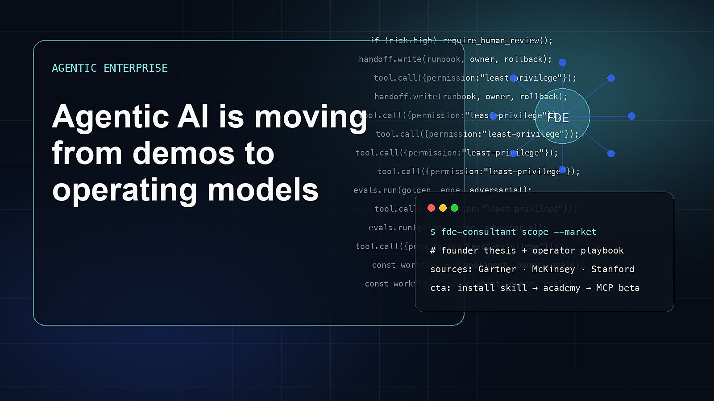
Agentic EnterpriseAgentic AI is moving from demos to operating models
The market no longer needs another chatbot demo. The opportunity is redesigning how teams decide, hand work to agents, verify outcomes, and keep humans accountable.
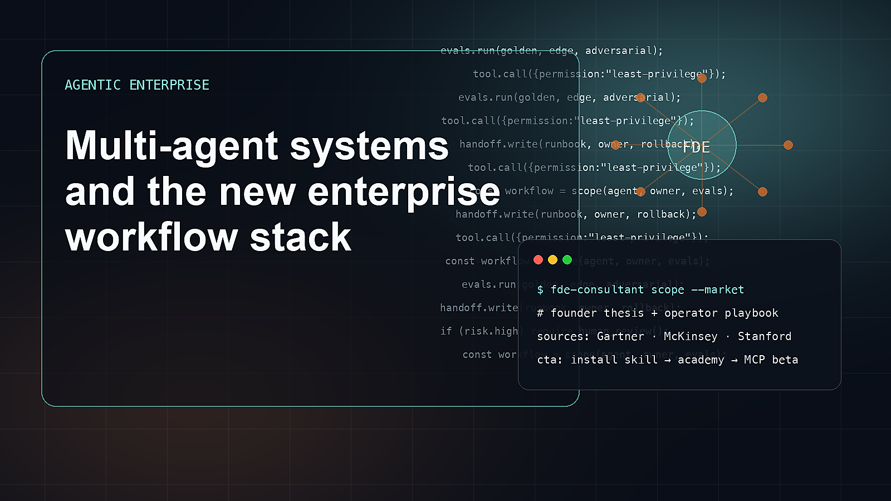
Agentic EnterpriseMulti-agent systems and the new enterprise workflow stack
The business value is not agent swarms — it's separated roles, context boundaries, review gates, and measurable handoffs.
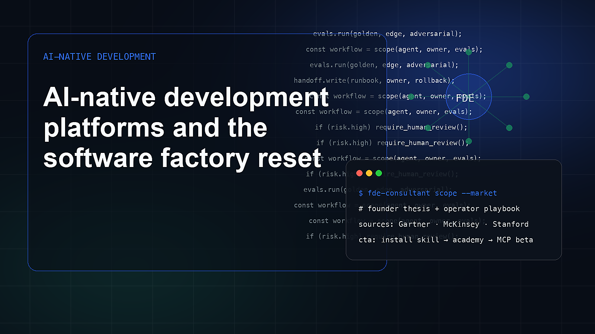
AI-Native DevelopmentAI-native development platforms and the software factory reset
Not "developers with autocomplete." A shift in how teams specify work, maintain repo knowledge, review changes, and measure throughput.
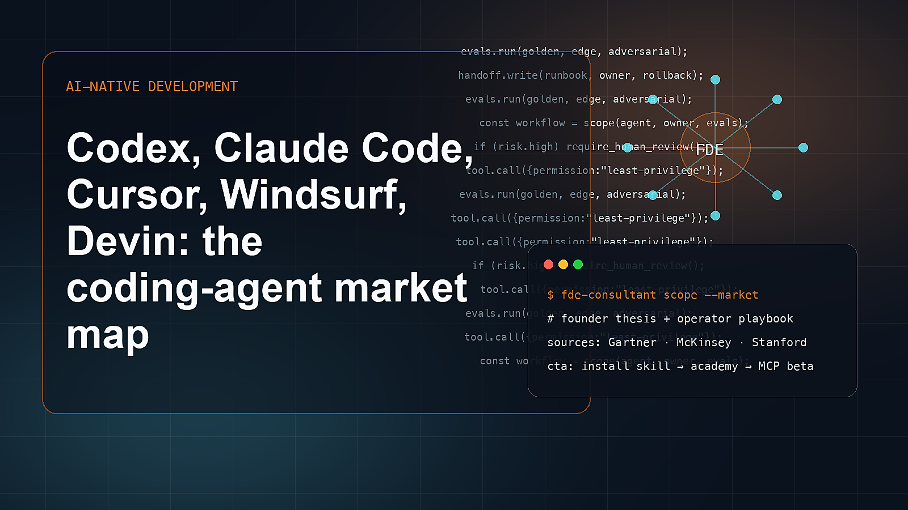
AI-Native DevelopmentCodex, Claude Code, Cursor, Windsurf, Devin: the coding-agent market map
The market is splitting into IDE assistants, terminal agents, cloud engineers, skill runtimes, and repo workers. The opportunity: make them operationally useful.
 FDE Strategy
FDE StrategyWhy enterprise AI agents need forward deployed operators
Agents don't fail because the model is weak. They fail because the workflow is vague, ownership is missing, data is messy, and "production success" is undefined.
FDE StrategyForward Deployed Engineer demand in 2026: why FDE roles grew 800%
FDE demand is up ~800% as enterprises move agents from demo to production — and the bottleneck shifts from model capability to reliable, verifiable deployment.
VerifiabilityVerifiable AI in 2026: closing the lab-to-production gap
Enterprise agents show a ~37% gap between benchmark and production. Verifiable AI — claims that resolve on ground truth — is how you close it.
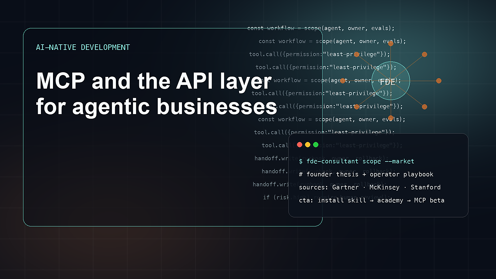
AI-Native DevelopmentMCP and the API layer for agentic businesses
Agents need scoped access to tools, resources, prompts and workflows. For founders, MCP is becoming the API layer of agentic businesses.
 AI-Native Development
AI-Native DevelopmentAgent Skills as the new packaging layer for expertise
Agent Skills are turning expertise into installable software. Which knowledge deserves to become a skill, and which should stay docs?
Trust & SecurityAI evals as the trust layer for production agents
As agents get autonomy, evals stop being a research afterthought and become the operating contract between founders, customers, engineers and regulators.
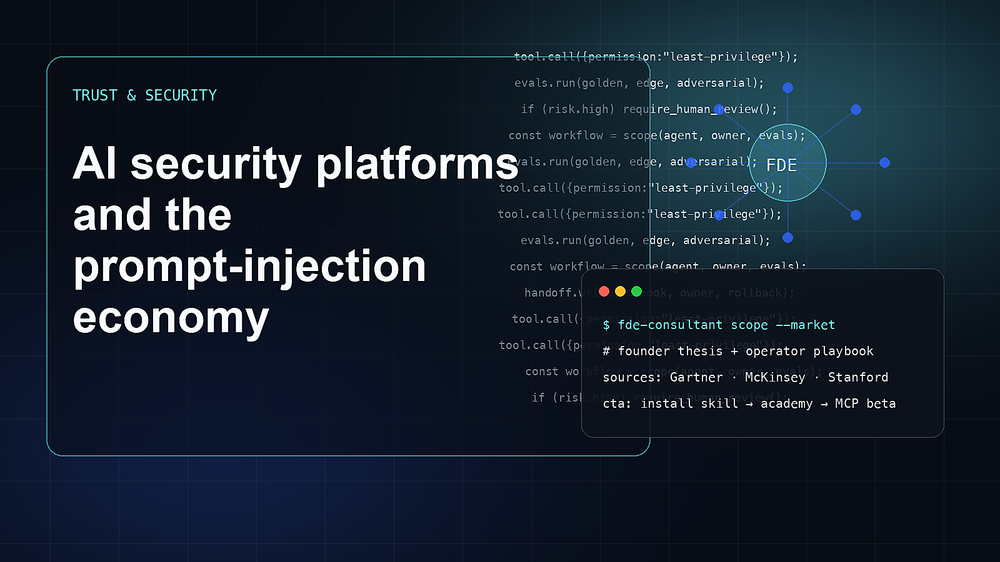
Trust & SecurityAI security platforms and the prompt-injection economy
Agentic AI expands the attack surface — models read, decide, call tools and write back. Treat prompt injection as workflow compromise, not a chatbot quirk.
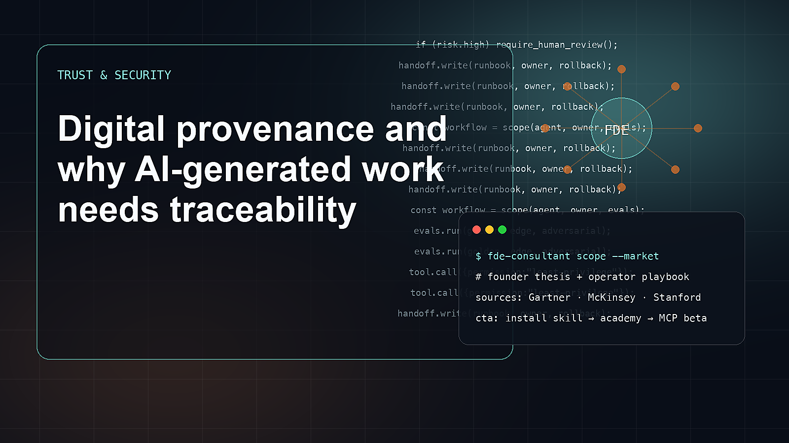
Trust & SecurityDigital provenance and why AI-generated work needs traceability
When agents write code, summarize evidence and call tools, provenance becomes operational infrastructure: what was generated, by whom, from which context.
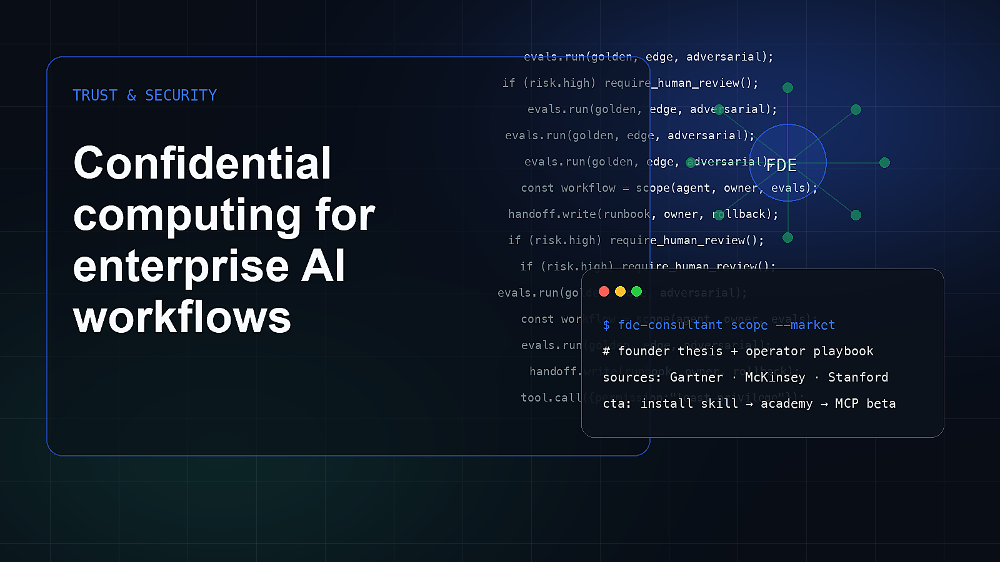
Trust & SecurityConfidential computing for enterprise AI workflows
Enterprise AI won't scale in sensitive workflows unless data, prompts, embeddings and intermediate outputs are protected during processing.
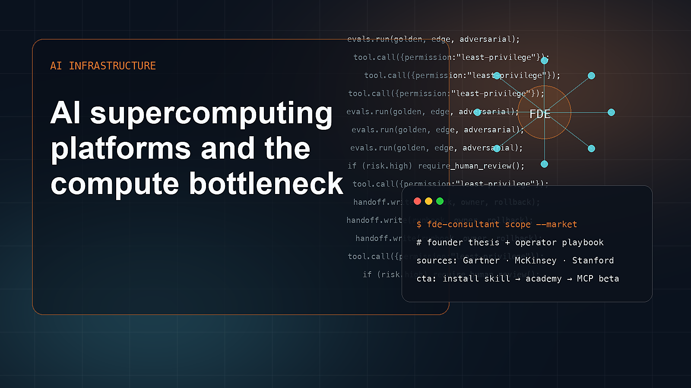
AI InfrastructureAI supercomputing platforms and the compute bottleneck
Compute shapes model strategy, product margins, latency, deployment geography, and which startups can compete.
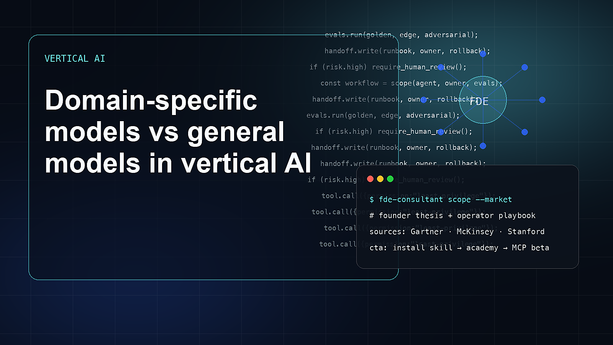
Vertical AIDomain-specific models vs general models in vertical AI
The advantage isn't a narrow custom model — it's workflow context, domain evals, and distribution into existing operations.
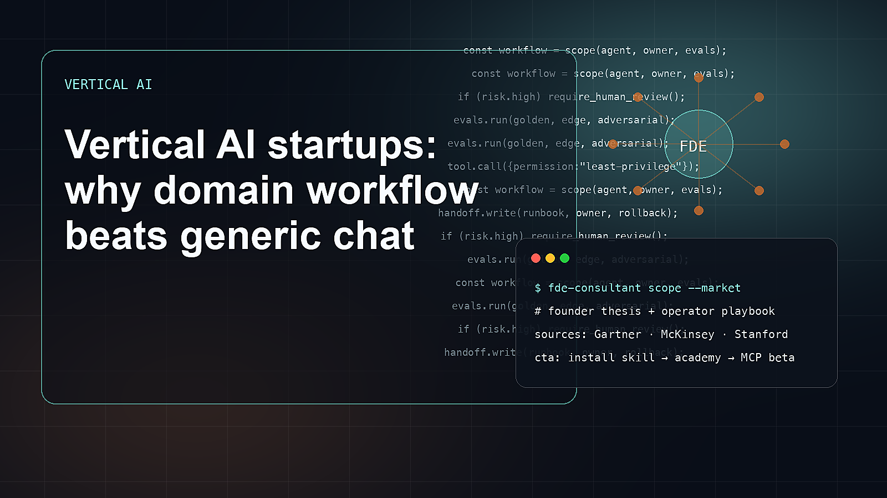
Vertical AIVertical AI startups: why domain workflow beats generic chat
Winners own a painful workflow, integrate into systems of record, and measure outcomes customers already care about.
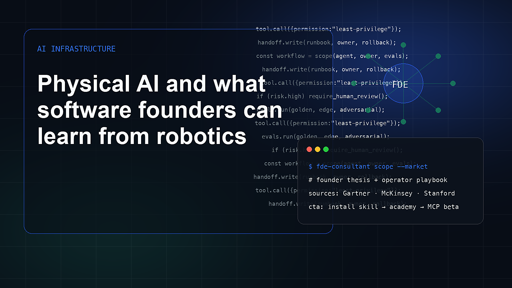
AI InfrastructurePhysical AI and what software founders can learn from robotics
Intelligence becomes valuable when it closes the loop between perception, decision, action, feedback and safety.
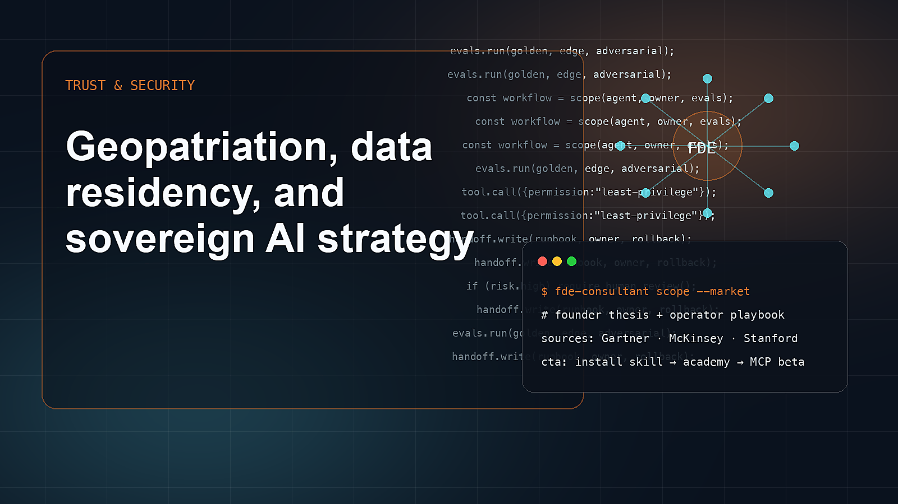
Trust & SecurityGeopatriation, data residency, and sovereign AI strategy
As AI becomes infrastructure, geography matters again — residency, sovereign cloud, model access and regulatory exposure shape where systems can run.
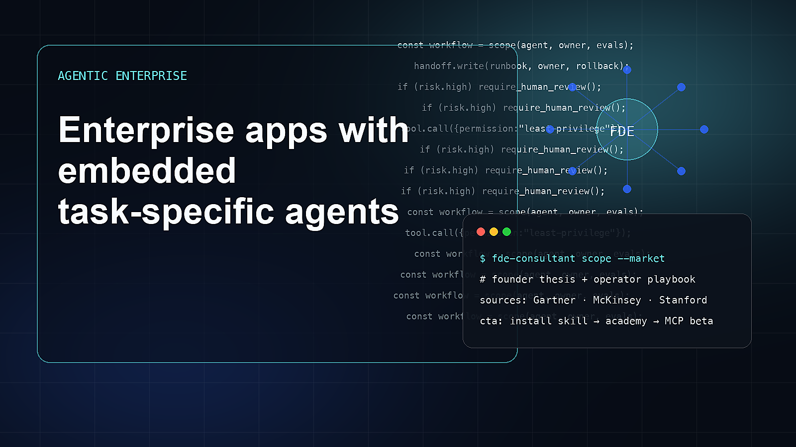
Agentic EnterpriseEnterprise apps with embedded task-specific agents
The next wave isn't a separate chatbot beside every app — it's task-specific agents embedded inside the workflows where decisions happen.
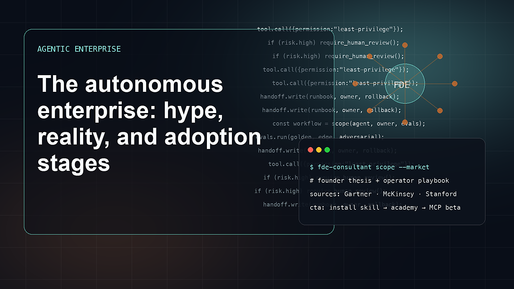
Agentic EnterpriseThe autonomous enterprise: hype, reality, and adoption stages
A useful north star but a dangerous sales promise. Most companies are still learning to deploy reliable task agents.
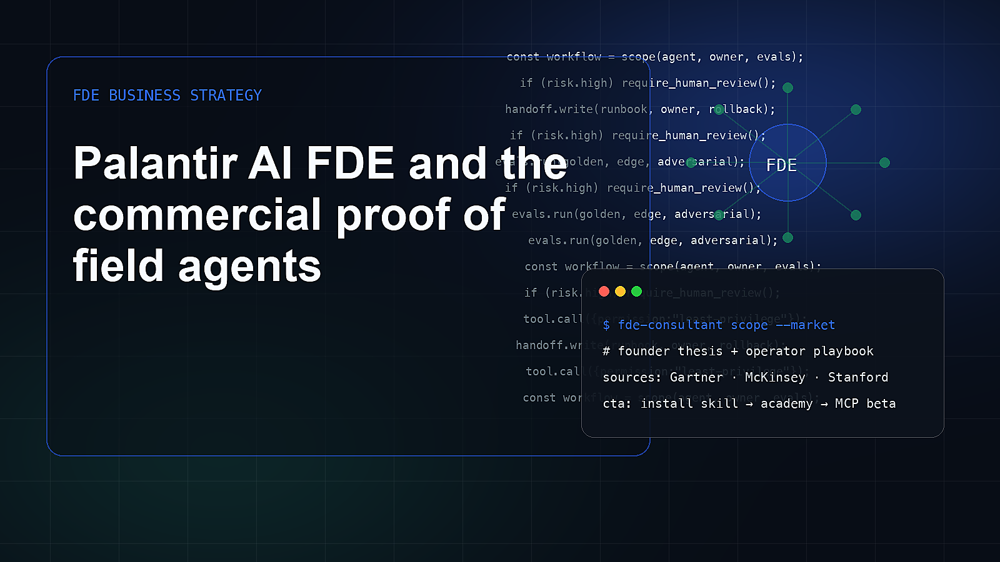
FDE StrategyPalantir AI FDE and the commercial proof of field agents
It validates the direction: forward-deployed work is becoming agent-assisted. The lesson isn't to copy Foundry — it's the operating system behind field engineering.
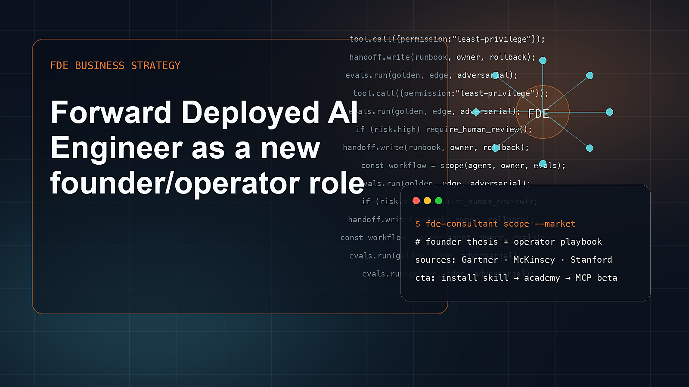
FDE StrategyForward Deployed AI Engineer as a new founder/operator role
The role bridging strategy, customer reality, agent tooling, evals and production ownership — and a founder archetype.
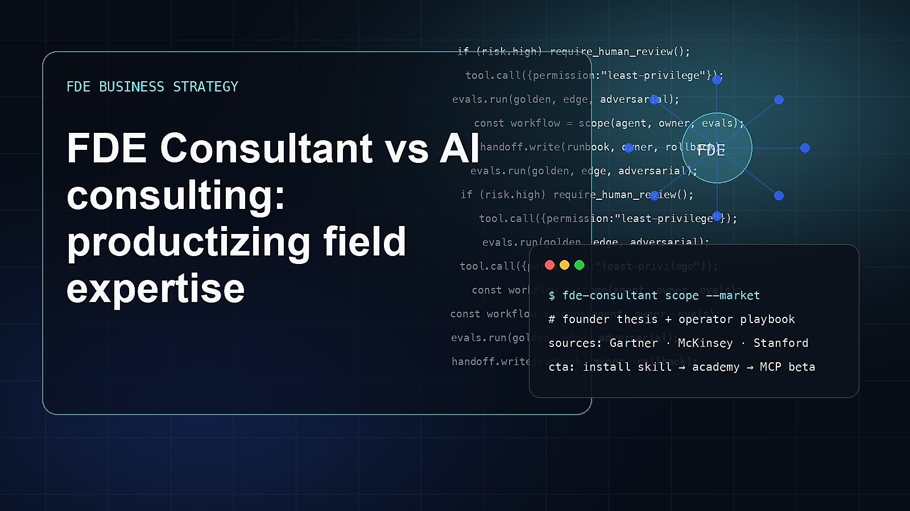
FDE StrategyFDE Consultants Protocoles vs AI consulting: productizing field expertise
AI consulting sells judgment by the hour. The opportunity is to productize the repeatable part into a Skill, Academy, templates, scripts and MCP tools.
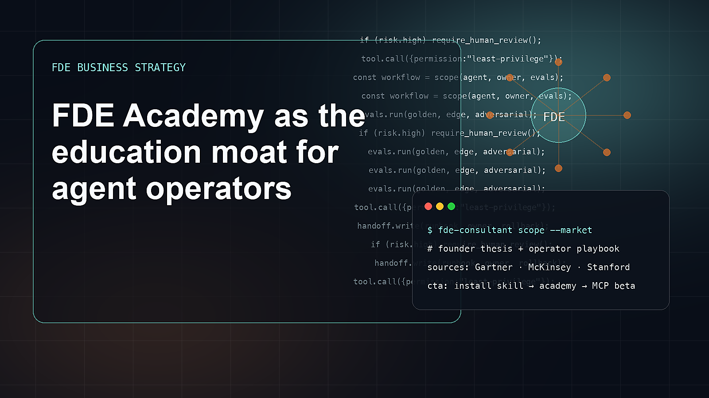
FDE StrategyFDE Academy as the education moat for agent operators
Not content-marketing filler — it's how the project teaches the market what good agent operation looks like before asking anyone to trust a hosted product.
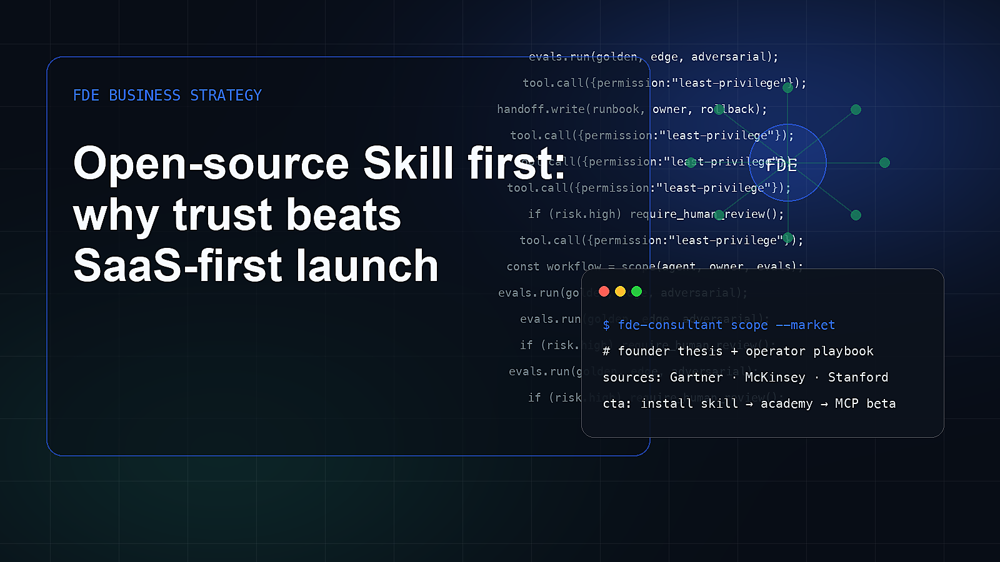
FDE StrategyOpen-source Skill first: why trust beats SaaS-first launch
The right order is Skill, Docs, Academy, Blog, then MCP Bêta. Selling hosted software before the method is trusted would weaken the project.